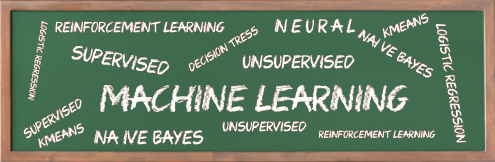

Artificial Intelligence
The term AI, coined by John McCarthy in 1956, was preceded by an excellent essay on the subject by Alan Turing in 1950; mechanical thought was considered by Ada Lovelace, assistant to Charles Babbage, in 1842.
I define AI as study of the computation required for intelligent behavior and the attempt to duplicate such computation using computers. Intelligent behavior connects perception of the environment to action appropriate for the goals of the actor. Intelligence, biologically costly in energy, pays for itself by enhancing survival. It isn't necessary to understand perfectly, but only to understand well enough to act appropriately in real time. Different points on the scale of intelligence versus cost, from insects to humans, are viable. Intelligence is computation in the service of life, just as metabolism is chemistry in the service of life. Airplanes fly with different hardware than birds; AI uses different hardware than humans, but will duplicate the essence of intelligence: appropriate connection between perception and action.

Current goals of AI include visual and speech perception, robotics, understanding human languages, representation of knowledge, reasoning, and learning. Expert systems have begun to capture human expertise and reproduce it in narrow domains. AI is a hard problem that will take much time and many advances; real progress has been made. Cognitive Science attempts to fuse AI with understanding of human cognition from psychology and neuroscience; this has occurred for early vision.AI is controversial: it may redefine our place in the universe, as did astronomy and evolution, by removing our claim to uniqueness by virtue of superior intelligence. Critics have made false arguments against AI: since a Turing Machine has limits, it cannot be intelligent (as if humans had no limits!); or embodiment is required for intelligence. Ignore them: we have an existence proof, and we are it.
AI Disciplines
- Psychology
- Biology
- Philosophy
- Logic
- Linguistics
- Art, Music, Literature ... and Creativity
- Economics, Politics, Sociology, Business Management, etc. ...